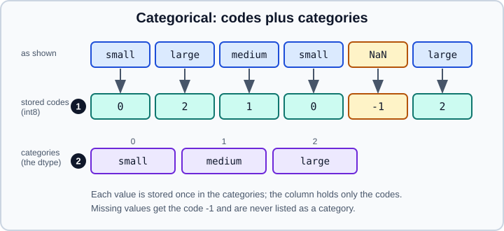

Categorical Data in pandas
|
This content was generated with the assistance of AI and should be verified against the official documentation before being relied on in production. |
A categorical variable takes a limited, usually fixed set of values: a size, a country, a satisfaction grade, a product
type. pandas has a dedicated category dtype for such columns. It stores each distinct value once and keeps only small
integer codes in the column, which saves memory, speeds up some operations, lets you define a logical order that differs
from the alphabetical one, and makes the set of allowed values explicit. This page covers creating and inspecting
categoricals, ordered categoricals, changing the categories, the behaviour of grouping and counting, combining
categoricals, and the pitfalls. It targets pandas 3.1 on Python 3.13 or 3.14 (NumPy 2.5) and was checked in October
2026; every example was run with Python 3.13 and pandas 3.1.0, and the printed output is the real output. The
statistical meaning of categorical and ordinal variables, and how models encode them, is covered in
Feature Engineering.
All examples start with the usual imports and are independent of one another:
import numpy as np
import pandas as pdHow a categorical is stored
A category column has two parts: an index of categories (the distinct allowed values, stored once) and an array of
integer codes, one per element, that point into it. A missing value has the code -1 and is never one of the
categories.

import pandas as pd
s = pd.Series(["small", "large", "medium", "small", None], dtype="category")
print(s)
print(s.cat.categories) # sorted order by default
print(s.cat.codes.tolist()) # -1 marks the missing value
print(s.cat.ordered)
print(s.isna().tolist())Output:
0 small
1 large
2 medium
3 small
4 NaN
dtype: category
Categories (3, str): ['large', 'medium', 'small']
Index(['large', 'medium', 'small'], dtype='str')
[2, 0, 1, 2, -1]
False
[False, False, False, False, True]Source: pandas user guide: Categorical data.
Note that the categories were sorted alphabetically (large, medium, small) and are not ordered: the default is a
categorical without a meaningful order. Since pandas 3.0 the categories of a text categorical have the str dtype
(Categories (3, str) in the output).
Creating categoricals
There are several ways to create one; all of them can state the categories explicitly.
import pandas as pd
from pandas.api.types import CategoricalDtype
# 1. dtype="category" lets pandas infer the categories (sorted unique values)
a = pd.Series(["b", "a", "b"], dtype="category")
# 2. astype on an existing column
df = pd.DataFrame({"size": ["small", "large", "medium", "small"]})
df["size"] = df["size"].astype("category")
# 3. An explicit CategoricalDtype fixes the categories and their order
size_type = CategoricalDtype(["small", "medium", "large"], ordered=True)
o = pd.Series(["small", "large", "medium", "small"]).astype(size_type)
print(o.dtype)
# 4. pd.Categorical, with the same arguments
print(pd.Categorical(["a", "b", "a"], categories=["b", "a"], ordered=True))
# 5. From codes that are already integers
print(pd.Categorical.from_codes([0, 2, 1, -1], categories=["a", "b", "c"]))
# 6. Binning a numeric column produces a categorical
print(pd.cut([1, 5, 10], bins=[0, 3, 7, 12], labels=["lo", "mid", "hi"]))
print(pd.qcut(pd.Series(range(10)), 4).dtype)Output:
category
['a', 'b', 'a']
Categories (2, str): ['b' < 'a']
['a', 'c', 'b', NaN]
Categories (3, str): ['a', 'b', 'c']
['lo', 'mid', 'hi']
Categories (3, str): ['lo' < 'mid' < 'hi']
categorySource: pandas user guide: Categorical data.
Passing categories= (or a CategoricalDtype) is the safer choice: the inferred categories depend on the values that
happen to be present, so two batches of data can end up with different, incompatible categories. A CategoricalDtype
object is also reusable: define it once and apply it to every file you read. Two dtypes are equal when their categories
match (order is ignored for unordered ones and significant for ordered ones).
Values that are not among the declared categories become missing. In pandas 3.1 constructing a categorical with such
values emits a Pandas4Warning ("Constructing a Categorical with a dtype and values containing non-null entries not in
that dtype’s categories is deprecated and will raise in a future version"), so treat it as an error to be fixed; see
Missing Data for finding the values it produced.
Ordered categoricals
Ordering gives the categories a logical rank, which makes comparison, sorting and min/max meaningful.
import pandas as pd
from pandas.api.types import CategoricalDtype
size_type = CategoricalDtype(["small", "medium", "large"], ordered=True)
o = pd.Series(["small", "large", "medium", "small"], dtype=size_type)
print(o.sort_values().tolist()) # by the logical order, not alphabetically
print(o.min(), o.max())
print((o > "small").tolist()) # comparison against a category label
print(o.cat.codes.tolist())
u = pd.Series(["b", "a"], dtype="category") # unordered
try:
u.max()
except TypeError as e:
print("TypeError:", e)
print(u.cat.as_ordered().max()) # declare an order, then it worksOutput:
['small', 'small', 'medium', 'large']
small large
[False, True, True, False]
[0, 2, 1, 0]
TypeError: Categorical is not ordered for operation max
you can use .as_ordered() to change the Categorical to an ordered one
bSource: pandas user guide: Sorting and order.
as_ordered() and as_unordered() flip the flag without touching the data. Sorting an ordered categorical uses the
order of the categories, and so do sort_values and Series.rank. Comparing two categoricals with each
other requires the same categories in the same order (for ordered ones); comparing with a scalar requires the scalar to be
one of the categories.
The cat accessor: changing categories
The .cat accessor exposes the categories and the methods that change them. All of them return new objects.
import pandas as pd
t = pd.Series(["a", "b", "a"], dtype="category")
try:
t.iloc[0] = "z" # not an allowed value
except TypeError as e:
print("TypeError:", e)
t = t.cat.add_categories(["z"]) # make room first
t.iloc[0] = "z"
print(t.tolist(), t.cat.categories.tolist())
print(t.cat.remove_categories(["b"]).tolist()) # removed values become missing
print(t.cat.remove_unused_categories().cat.categories.tolist())
print(t.cat.rename_categories({"a": "A"}).cat.categories.tolist())
print(t.cat.rename_categories(lambda c: c.upper()).cat.categories.tolist())
print(t.cat.reorder_categories(["z", "b", "a"], ordered=True).cat.categories.tolist())
print(t.cat.set_categories(["b", "y"]).tolist()) # replace the set: unlisted values become missingOutput:
TypeError: Cannot setitem on a Categorical with a new category (z), set the categories first
['z', 'b', 'a'] ['a', 'b', 'z']
['z', nan, 'a']
['a', 'b', 'z']
['A', 'b', 'z']
['A', 'B', 'Z']
['z', 'b', 'a']
[nan, 'b', nan]Summary of the methods:
| Method | What it does |
|---|---|
|
Adds allowed values at the end; existing data is untouched. |
|
Removes values; elements that had them become missing. |
|
Drops categories no element uses (common after filtering rows). |
|
Renames the labels without changing which element has which category. |
|
Same set of categories in a new order; the list must contain exactly the current categories. |
|
Replaces the set; any value not in the new set becomes missing. Can add, remove and reorder in one call. |
|
Switches the ordered flag. |
|
The integer codes (read-only view of the integers). |
Assigning a value that is not a category raises a TypeError: this is what makes a categorical a useful
guard against typos. Series.fillna has the same restriction, so add a category such as "missing" before filling.
Counting, grouping and unused categories
Operations on a categorical know about the declared categories, not just the observed ones. Unused categories show up as zero counts.
import pandas as pd
u = pd.Series(pd.Categorical(["a", "a"], categories=["a", "b", "c"]))
print(u.value_counts().to_dict()) # b and c appear with 0
print(u.nunique()) # counts observed values only
print(u.unique())
d = pd.DataFrame({"k": pd.Categorical(["a", "a"], categories=["a", "b"]), "v": [1, 2]})
print(d.groupby("k")["v"].sum().to_dict()) # observed=True is the default in pandas 3
print(d.groupby("k", observed=False)["v"].sum().to_dict()) # every category, empty ones included
f = pd.Series(["a", None, "b"], dtype="category")
try:
f.fillna("z")
except TypeError as e:
print("TypeError:", e)
print(f.cat.add_categories("missing").fillna("missing").tolist())Output:
{'a': 2, 'b': 0, 'c': 0}
1
['a']
Categories (3, str): ['a', 'b', 'c']
{'a': 3}
{'a': 3, 'b': 0}
TypeError: Cannot setitem on a Categorical with a new category (z), set the categories first
['a', 'missing', 'b']Source: pandas user guide: Operations.
The observed argument of groupby deserves attention. In pandas 2 the default was False, so grouping by a categorical
returned a row for every category, including empty ones, and grouping by two categoricals returned their full Cartesian
product (a classic memory explosion). pandas 3.0 changed the default to observed=True.
Pass observed=False when you want the empty groups, for example to report a zero for each
category in a fixed report. See Group By: Split-Apply-Combine.
value_counts() on a categorical orders by count like any other, and sort_index() on the result gives the category
order; the zero rows remain.
Memory and speed
The saving is largest for text columns with few distinct values.
import numpy as np
import pandas as pd
rng = np.random.default_rng(0)
big = pd.Series(rng.choice(["red", "green", "blue", "grey"], 100_000))
print(big.dtype)
print("str :", big.memory_usage(deep=True), "bytes")
print("object :", big.astype(object).memory_usage(deep=True), "bytes")
print("category:", big.astype("category").memory_usage(deep=True), "bytes")
print(big.astype("category").cat.codes.dtype)Output:
str
str : 1200152 bytes
object : 5300152 bytes
category: 100181 bytes
int8The exact byte counts depend on the platform and on whether PyArrow is installed (the default str dtype is
PyArrow-backed when it is), but the ratio is typical: the codes use one byte each (int8) while the categories are
stored once. The saving shrinks as the number of distinct values approaches the number of rows, and for a column of
unique identifiers a categorical is larger than plain text. Use it when the number of distinct values is small compared
with the number of rows, and when the same column is grouped, sorted or compared many times.
Working with categoricals in other operations
-
Arithmetic is not available.
sum,meanand friends raiseTypeError("does not support operation 'sum'") even when the categories are numbers. Convert first:s.astype(int).sum(), or uses.cat.codesonly when you really want the codes. -
mapkeeps the categorical.o.map({"small": 1, "medium": 2, "large": 3})returns a categorical whose categories are the numbers; call.astype(int)to get plain numbers. -
String methods return plain text.
s.str.upper()works on a categorical of strings and returns a new text column, not a categorical. -
get_dummiesmakes indicator columns for every category, observed or not (pd.get_dummies(o, dtype=int)); passdtype=intto get 0 and 1 instead of Booleans. For modelling pipelines prefer an encoder inside the pipeline, see Feature Engineering. -
Selecting by dtype:
df.select_dtypes("category")returns the categorical columns. -
Going back:
astype(object),astype(str)ornp.asarray(s)return the labels, with NaN for missing values.
import pandas as pd
from pandas.api.types import CategoricalDtype
n = pd.Series([3, 1, 2, 1]).astype("category")
try:
n.sum()
except TypeError as e:
print("TypeError:", e)
print(n.astype(int).sum())
size_type = CategoricalDtype(["small", "medium", "large"], ordered=True)
o = pd.Series(["small", "large", "medium", "small"], dtype=size_type)
mapped = o.map({"small": 1, "medium": 2, "large": 3})
print(mapped.dtype, mapped.astype(int).tolist())
print(pd.get_dummies(o, dtype=int))
print(o.describe())Output:
TypeError: 'Categorical' with dtype category does not support operation 'sum'
7
category [1, 3, 2, 1]
small medium large
0 1 0 0
1 0 0 1
2 0 1 0
3 1 0 0
count 4
unique 3
top small
freq 2
dtype: objectSource: pandas user guide: Operations.
Combining categoricals
When two categoricals with different categories are concatenated, the result is not categorical, because pandas cannot decide how to merge the category sets: it falls back to the underlying values. There are two ways to keep the dtype.
import pandas as pd
from pandas.api.types import union_categoricals
x = pd.Categorical(["a", "b"])
y = pd.Categorical(["b", "c"])
print(pd.concat([pd.Series(x), pd.Series(x)]).dtype) # same categories: stays category
print(pd.concat([pd.Series(x), pd.Series(y)]).dtype) # different categories: falls back
print(pd.concat([pd.Series(x), pd.Series(y)], union_categories=True).dtype) # new in pandas 3.1
print(union_categoricals([x, y])) # the same union, as a functionOutput:
category
str
category
['a', 'b', 'b', 'c']
Categories (3, str): ['a', 'b', 'c']Source: pandas user guide: Unioning and pandas 3.1.0 release notes.
concat(..., union_categories=True) is new in pandas 3.1 and unions the categories; before it,
union_categoricals was the only way. The safest approach is to apply one shared CategoricalDtype to every piece before
combining them, so the categories are identical by construction.
When not to use a categorical
-
High cardinality (identifiers, free text, timestamps): no memory saving, extra complexity.
-
Columns that you do arithmetic on: keep numbers as numbers and bin them with
cutonly for reporting. -
Data that changes its set of values constantly, because every new value needs
add_categoriesfirst. -
Interchange: a categorical column written to Parquet with PyArrow is read back as a categorical by pandas, but many other tools see plain text; check the round trip. See Parquet, Feather, ORC and Iceberg.
Categoricals also relate to the text dtypes covered in Text Data and the str Dtype and to the general dtype overview in Data Types Overview.
Older material that no longer applies
| Statement in older books and tutorials | Today | Changed |
|---|---|---|
|
The default is |
pandas 3.0 |
Categories of a text categorical are |
They are |
pandas 3.0 |
Concatenating categoricals with different categories always gives |
Gives the underlying dtype; |
pandas 3.1 |
Values outside the categories are silently set to NaN on construction |
Deprecated; emits a |
pandas 3.1 |